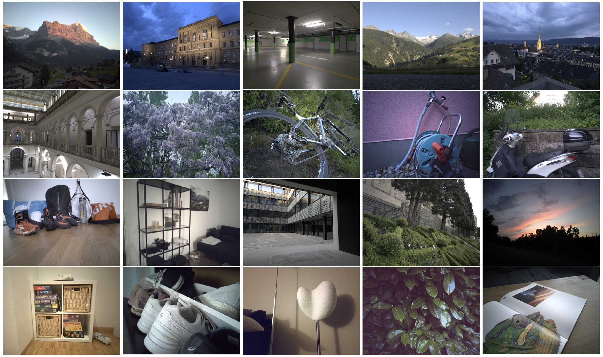
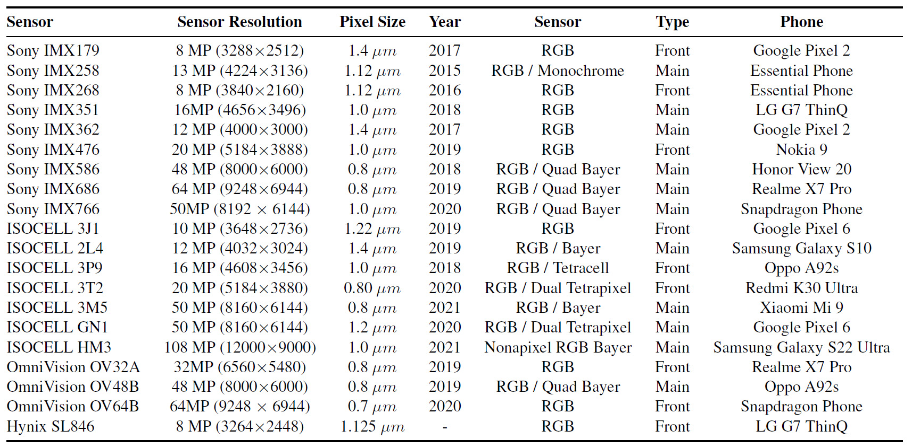
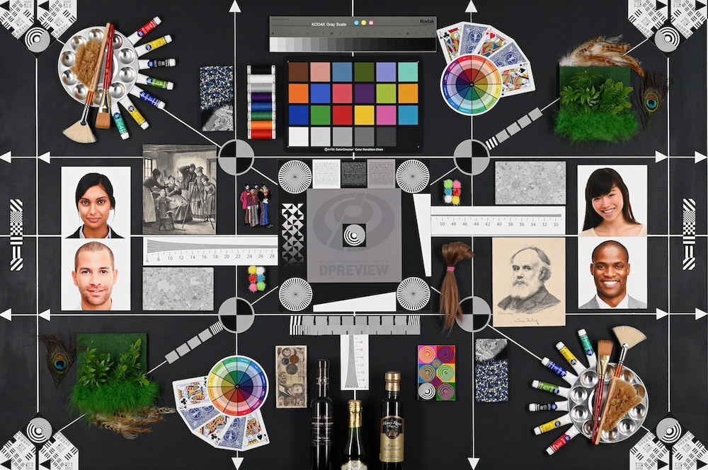
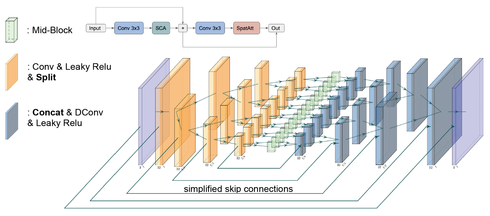
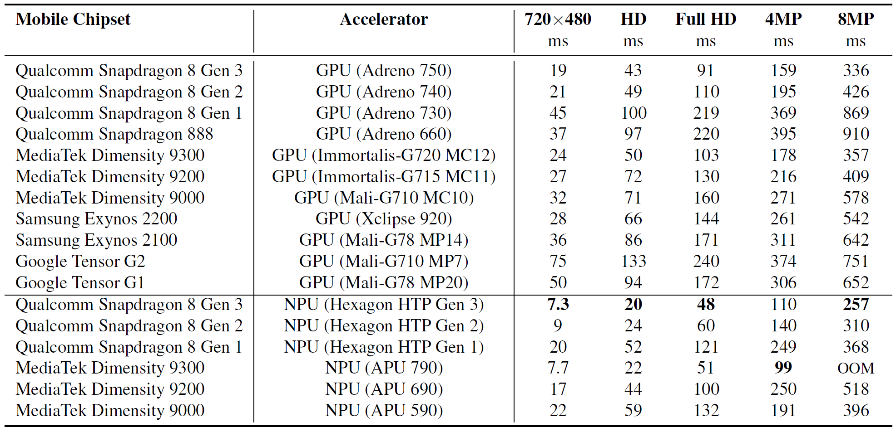

ETH Zurich
Switzerland, 2017-2025
| Roman Flepp | Andrey Ignatov | Radu Timofte | Luc Van Gool |
| r.flepp@hotmail.com | ihnatova@ethz.ch | radu.timofte@uni-wuerzburg.de | vangool@vision.ee.ethz.ch |
Abstract: The recently increased role of mobile photography has raised the standards of on-device photo processing tremendously. Despite the latest advancements in camera hardware, the mobile camera sensor area cannot be increased significantly due to physical constraints, leading to a pixel size of 0.6-2.0 μm, which results in strong image noise even in moderate lighting conditions. In the era of deep learning, one can train a CNN model to perform robust image denoising. However, there is still a lack of a substantially diverse dataset for this task. To address this problem, we introduce a novel Mobile Image Denoising Dataset (MIDD) comprising over 400,000 noisy / noise-free image pairs captured under various conditions by 20 different mobile camera sensors. Additionally, we propose a new DPreview test set consisting of data from 294 different cameras for precise model evaluation. Furthermore, we present the efficient baseline model SplitterNet for the considered mobile image denoising task that achieves high numerical and visual results, while being able to process 8MP photos directly on smartphone GPUs in under one second. Thereby outperforming models with similar runtimes. This model is also compatible with recent mobile NPUs, demonstrating an even higher speed when deployed on them. The conducted experiments demonstrate high robustness of the proposed solution when applied to images from previously unseen sensors, showing its high generalizability.

Our main goal was to develop a diverse and comprehensive real image denoising dataset consisting of photos captured using various mobile camera sensors. To achieve this, approximately 20,000 noisy images were collected for each of 20 different mobile camera sensors. The burst mode was used to capture 20 RAW Bayer images for each static scene with a custom Android application utilizing the Camera2 API, which allowed to bypass the phone's image signal processor (ISP) and prevent any internal image denoising. All photos were taken using a tripod and a remote control, ensuring no movement of the camera or its sensor. This approach yielded over 200K different noisy-to-ground-truth image pairs for each sensor, with 20 pairs per scene.
About 20% of the dataset was captured during the daytime, 50%-60% under less ideal conditions (like blue hour, dark indoor areas, artificial lighting), and roughly 20% during night-time or in very low light conditions. These varied conditions were crucial to encompass a broad range of real-world lighting situations as they have a strong impact on the noise distribution. Utilizing 20 different sensors, each with a unique noise pattern, was essential to introduce an even more diverse noise distribution. This process resulted in over 400,000 images in total (20 images per burst × 1000 scenes × 20 sensors).


We also introduce an additional dataset collected by web-scraping the DPreview website. This site features an extensive camera comparison tool that showcases photos captured with various ISO levels for 294 different camera sensors. These range from low-end digital pocket cameras and phones to high-end cameras, including the Phase One IQ4 with its 150MP image sensor. The methodology for creating the images was consistent across all devices. A camera or phone was positioned centrally above the same scene, capturing RAW images starting from the lowest ISO level and ascending through the ISO range as far as each camera allowed. The chosen scene provides a rich array of colors, details, and intricate structures, making it an ideal environment for photography analysis.
The alignment of the collected image data was performed using a sliding window approach. The images were then batched, with the lowest ISO image serving as the ground truth and the highest ISO levels as noisy samples. What sets this dataset apart is the unprecedented variety of image sensors it incorporates, surpassing in this aspect all previously used image denoising datasets by at least an order of magnitude. Consequently, this dataset provides an excellent resource for evaluating and testing image denoising models, as well as for assessing image denoising datasets themselves as will be discussed later.

The SplitterNet architecture was developed taking into account various constraints imposed by mobile AI accelerators such as smartphone NPUs and GPUs. To reduce the model complexity, it performs splitting of tensors throughout the network to run the convolution operation on a smaller split tensor versus convolving the tensor without splitting. From a high-level view, the SplitterNet is a U-Net-based model with multiple paths, its overall architecture is shown above. After convolving the input, it is split along the channel axis. Runtime results of the SplitterNet model on various mobile GPUs and NPUs are provided below:

TensorFlow implementation of the proposed models and the whole training pipeline is available in our github repo
Pre-trained models can be downloaded separately here
"Real-World Mobile Image Denoising Dataset with Efficient Baselines",
In
ETH Zurich
Switzerland, 2017-2025